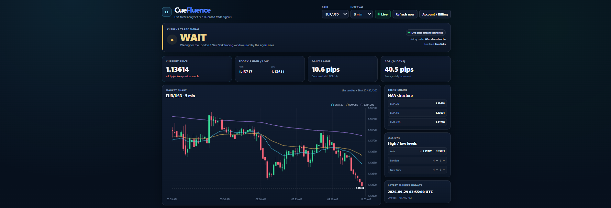

SWOOK LABS FOREX ANALYSIS TOOL
CueFluence
Forex technical analysis without the indicator overload.
CueFluence combines multiple forex technical indicators into one clear dashboard to help you understand when market conditions favour buying and when waiting may make more sense.
Open CueFluenceWHAT IS CUEFLUENCE?
A simpler way to read forex technical indicators.
Forex traders often use several technical indicators at the same time. The problem is that those indicators can produce conflicting information, making it difficult to understand what the market is actually doing.
CueFluence is a forex technical analysis dashboard designed to simplify that process. Instead of forcing you to interpret several indicators separately, CueFluence brings important technical information together and evaluates the overall market setup.
The goal is not to replace your own analysis or trading strategy. CueFluence is designed as a decision-support tool that helps make technical indicator confluence easier to understand.
FOREX ANALYSIS FEATURES
Multiple indicators. One clearer picture.
Indicator Confluence
CueFluence evaluates several technical indicators together instead of relying on a single indicator.
BUY or WAIT
Technical conditions are simplified into clear BUY or WAIT signals designed to make market analysis easier to interpret.
Market Context
View technical conditions alongside market session information and daily trading-range context.
TECHNICAL INDICATORS
What does CueFluence analyze?
CueFluence combines several commonly used forex technical-analysis tools to provide a broader view of current market conditions.
EMA 20 / 50 / 200
Exponential Moving Averages help identify short, medium and longer-term market direction and trend structure.
ADR
Average Daily Range provides context about how far a currency pair typically moves during a trading day.
Trading Sessions
CueFluence considers Asia, London and New York market-session context when presenting market information.
HOW CUEFLUENCE WORKS
From technical data to a simpler decision.
1. Analyze
CueFluence reads forex market data and calculates multiple technical indicators.
2. Compare
The indicators are evaluated together to identify whether multiple technical conditions are pointing in the same direction.
3. Decide
CueFluence presents the result in a simplified format so you can use it alongside your own analysis and trading strategy.
ANALYSIS, NOT EXECUTION
CueFluence does not place trades.
CueFluence is not a forex broker or trading platform.
The dashboard analyzes technical market information and provides decision-support signals. If you decide to trade, the trade is placed separately through your own broker or trading platform.
This separation allows CueFluence to focus on one job: helping make forex technical analysis easier to understand.
ACCESS CUEFLUENCE
Simplify your market analysis.
CueFluence
Access the full CueFluence forex technical analysis dashboard from your web browser.
- Forex technical analysis dashboard
- EMA 20 / 50 / 200 analysis
- ADR market-range analysis
- Market session context
- Indicator confluence analysis
- BUY / WAIT decision-support signals
FREQUENTLY ASKED QUESTIONS
CueFluence FAQ
What is CueFluence?
CueFluence is a web-based forex technical analysis tool that combines multiple market indicators into a simplified decision-support dashboard.
What forex indicators does CueFluence use?
CueFluence includes analysis based on EMA 20, EMA 50, EMA 200, Average Daily Range and market-session context.
Does CueFluence automatically trade forex?
No. CueFluence does not execute trades and is not a broker. Trades are placed separately through your own broker or trading platform.
What do BUY and WAIT mean?
BUY and WAIT summarize the technical conditions CueFluence is currently detecting. They are designed to simplify indicator interpretation and should be considered alongside your own analysis.
Is CueFluence financial advice?
No. CueFluence provides technical market analysis for informational and decision-support purposes. It does not provide personalized financial advice or guarantee trading results.